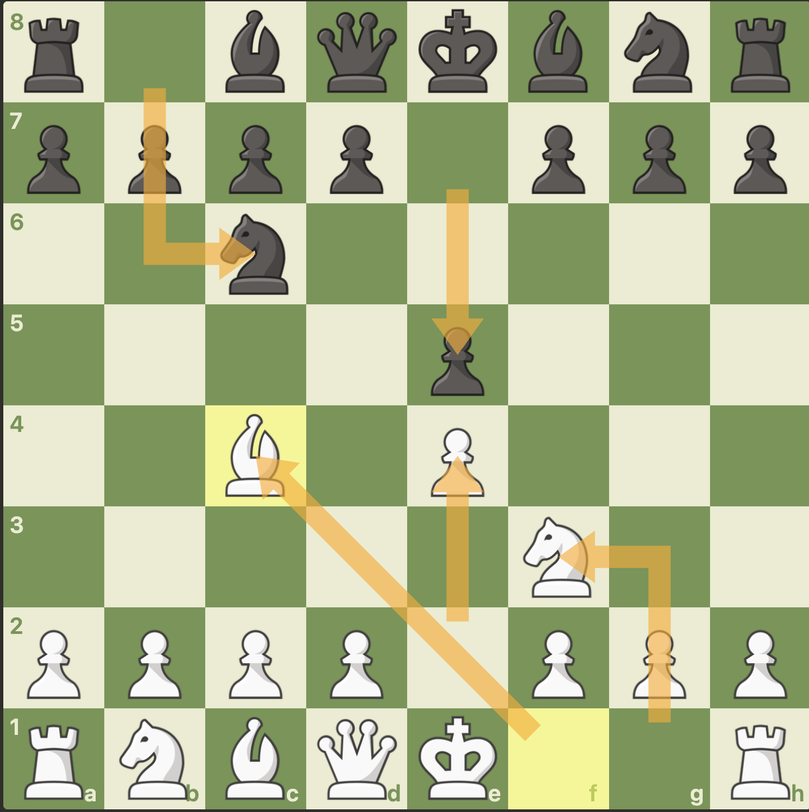

전략은 판 전체를 보는 연습
전술이 짧은 계산이라면 전략은 말의 위치와 앞으로의 계획을 보는 일입니다. 초보자는 복잡한 이론보다 기본 원칙을 꾸준히 지키는 것이 먼저입니다.
기본 전략
좋은 수를 찾기 어렵다면 중앙, 말 전개, 킹 안전을 먼저 확인해보세요. 이 세 가지가 초반 운영의 기본이 됩니다.

전술이 짧은 계산이라면 전략은 말의 위치와 앞으로의 계획을 보는 일입니다. 초보자는 복잡한 이론보다 기본 원칙을 꾸준히 지키는 것이 먼저입니다.
e4, d4, e5, d5 같은 중앙 칸을 차지하면 말들이 더 넓게 움직일 수 있습니다.
초반에는 나이트와 비숍을 빨리 꺼내서 공격과 수비에 참여하게 만듭니다.
캐슬링으로 킹을 안전한 곳에 두고, 킹 주변의 폰 구조를 함부로 약하게 만들지 않습니다.
이유 없이 같은 말을 여러 번 움직이면 다른 말들이 늦게 전개됩니다.
퀸이 빨리 나오면 상대의 공격 대상이 되어 시간을 잃기 쉽습니다.
내 수만 보지 말고, 상대가 다음에 체크나 공격을 할 수 있는지 먼저 살핍니다.